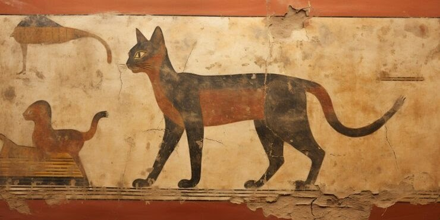
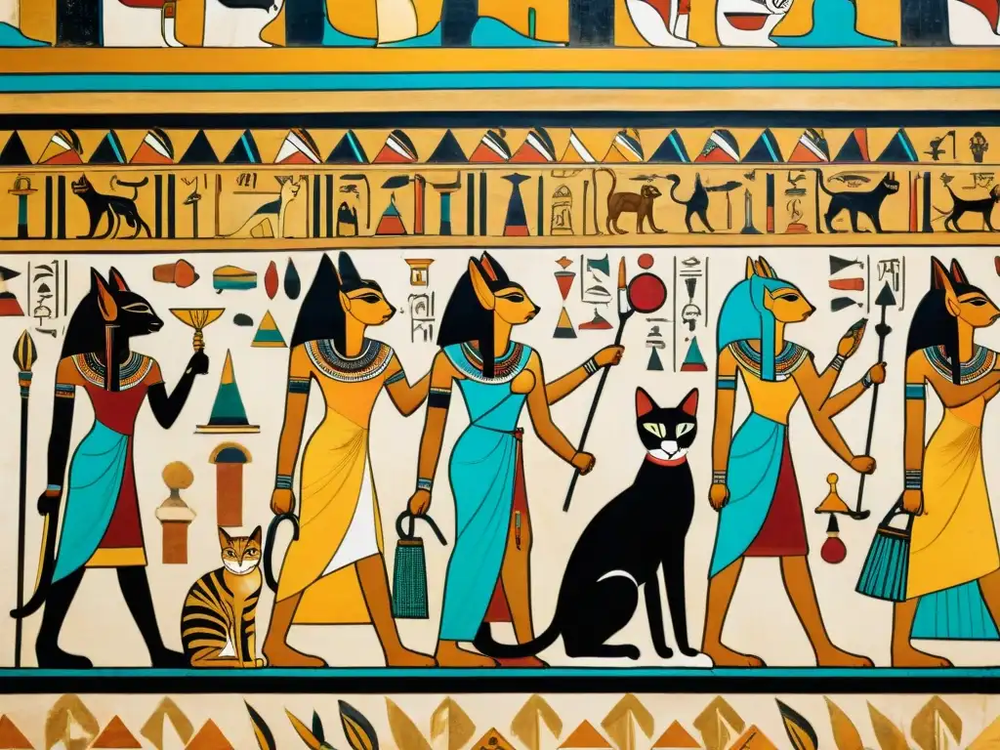
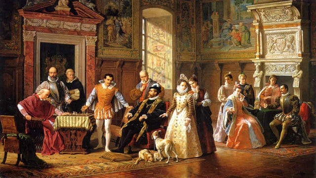
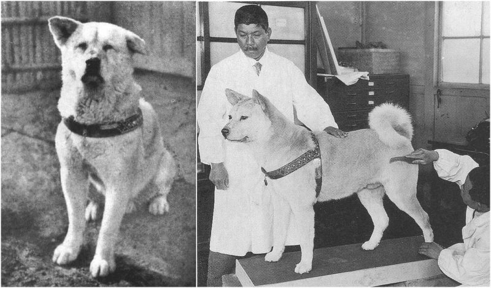
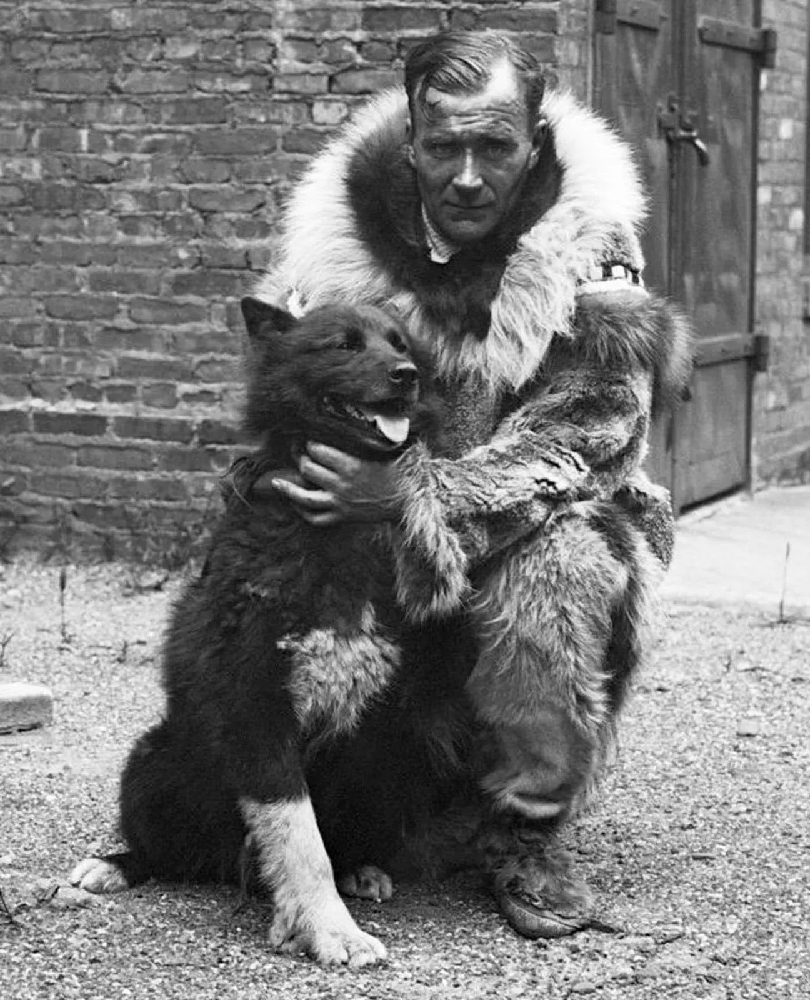

Mascotas
Historia de mascotas
Las mascotas actualmente son algo muy común, compañeros de vida para muchos, ayudantes para otros y un miembro mas de la familia para todos. Sin duda alguna las mascotas han ocupado muchos puestos en la vida del ser humano, sin embargo, ¿A sido siempre así?
Remontándonos a épocas prehistóricas, el primero en aparecer es el actualmente conocido como “el mejor amigo del hombre”, el perro. Su vínculo comenzó hace entre 15000 y 33500 años, cuando los lobos grises se comenzaron a acercar a los campamentos humanos buscando comida. Los humanos escogieron a los lobos mas sumisos para que les ayudaran en la caza, la vigilancia y la protección.

El siguiente en entrar fue el gato. Su domesticación ocurrió hace entre 9000 y 10000 años en el Creciente Fértil y Mesopotamia. Los gatos se acercaron a los sitios agrícolas por la cantidad de roedores que había en esas zonas.
Mas adelante, los gatos tomaron un rol mucho mas importante en el antiguo Egipto, siendo adorados y encargados de proteger los hogares de serpientes y roedores. Con frecuencia eran momificados después de morir. Otros animales, como perros, monos e incluso leones, acompañaban a los faraones.


En la edad media, los perros de raza y los halcones representaban un alto estatus entre la nobleza y se utilizaban para la caza. En otras culturas, los caballos, camellos y elefantes fueron indispensables para el transporte y las guerras.
En Europa, la visión respecto a los animales cambio bastante. Dejaron de ser vistos como solo herramientas de trabajo o control de plagas y pasaron a verse como símbolos de afecto y compañía. En 1873 se fundo el Kennel Club en el Reino Unido, impulsando la crianza y el registro de razas caninas.
Historia conmovedora de mascotas
1. Hachikō: fue un perro de la raza Akita Inu que vivió en Japón en la década de 1920. Acompañaba cada día a su dueño (El profesor Hidesaburo Ueno) a la estación de tren de Shibuya y volvía cada tarde a esperarlo. En 1925, el profesor sufrió un derrame cerebral repentino en el trabajo y murió. Durante casi 10 años, Hachikō volvió cada tarde a la estación con la fe de ver a su dueño, convirtiéndose en un símbolo mundial de fidelidad antes de morir en 1935.

2. Balto: fue un perro lobo siberiano (husky) de Alaska. En el invierno de 1925, un brote de difteria amenazo la lejana localidad de Nome, Alaska. Las medicinas estaban atrapadas muy lejos debido a la tormenta. Organizaron una carrera de relevos con trineos tirados por perros a través de mas de 1000 kilómetros. Baldo lidero el ultimo y mas peligroso tramo de 53 millas a través de la ventisca, guiando al equipo en la oscuridad hasta entregar el suero que salvo cientos de vidas.

3. Greyfriars Bobby: Fue un pequeño perro Skye Terrier de Edimburgo, Escocia. Pertenecía a un vigilante nocturno llamado John Gray. Cuando su dueño murió de tuberculosis en 1858 y fue enterrado en el cementerio Greyfriars, Bobby se quedó a vivir junto a su lápida. Durante 14 años, desafió el frío, la lluvia y el invierno, negándose a apartarse del lugar hasta el último día de su vida.

Consejos de cuidado
Sin duda las mascotas representan la mejor compañía, demuestran lealtad y algunas agradeciendo (A su manera) hacia los dueños, es por esto que cuidarlas bien es de total importancia. Los cuidados de cada mascota varían mucho dependiendo de su especie y ambiente, aunque algunos consejos generales podrían ser
1. Proporciona agua fresca y limpia a diario, junto con un alimento formulado específicamente para su especie, edad y nivel de actividad. Evita darle comida tóxica (como chocolate, cebolla, uvas o restos de comida humana) y previene el sobrepeso.
2. Lleva a tu mascota al médico veterinario al menos una o dos veces al año para revisiones generales. Mantén al día su calendario de vacunación y desparasitación (interna y externa).
3. Adapta los baños, el cepillado de dientes y el cuidado del pelaje o las uñas según las características específicas de cada especie. Revisa con frecuencia sus orejas, ojos y piel para detectar anomalías a tiempo.
4. Asegúrate de que disponga de un espacio limpio, protegido de temperaturas extremas (frío o calor excesivo) y libre de objetos pequeños que pueda tragar o sustancias peligrosas.
5. Los animales necesitan moverse y entretenerse para evitar el estrés y el aburrimiento. Bríndale paseos, juegos interactivos o espacios adecuados según su naturaleza (como juguetes seguros).
6. Usa collares con placa de contacto actualizada y considera el uso de microchip para facilitar su rescate en caso de pérdida.
7. Dedica tiempo diario a interactuar con ella con paciencia, refuerzo positivo y comprensión de su lenguaje corporal.
Páginas recomendadas
Algunos sitios que te podrían ayudar a investigar un poco mas a fondo sobre como cuidar tu mascota podrían ser “ExpertoAnimal”, “PetMD”, “Blog de Tiendanimal”
Si estas interesado en adoptar o comprar una mascota, “PetsGuia” es una opción viable para ver el precio aproximado de una mascota de una raza en especifico y evitar una posible estafa. Para la adopción es mas complejo pues las opciones y paginas varían mucho del sitio donde se viva, como lo es por ejemplo “Corazón peludito”, una página web que permite incluso ofrecerse como voluntario, además de contar con su propia tienda virtual llena de opciones variadas.